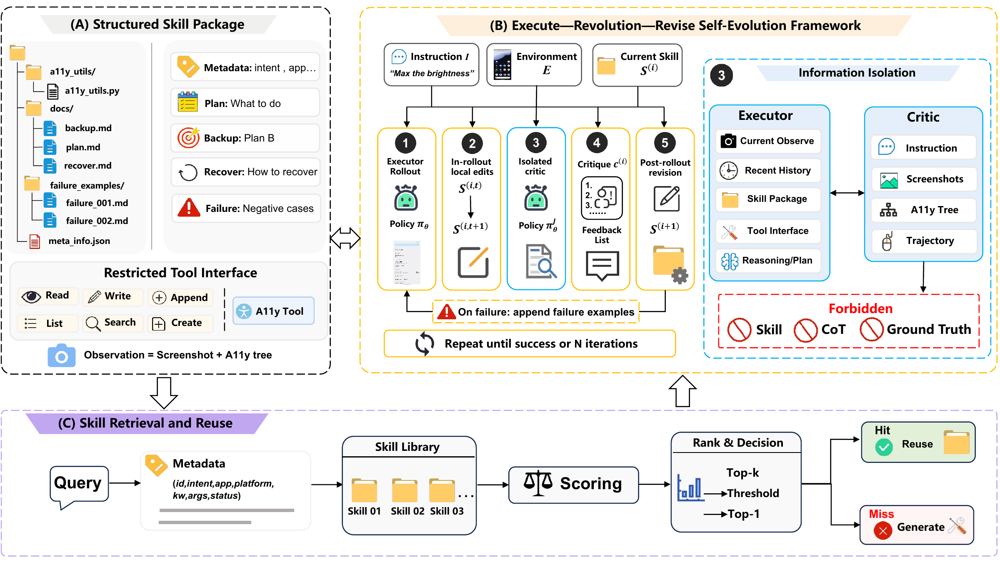

01研究背景与问题定义
GUI 任务的执行环境会在过程中变化：弹窗出现、页面加载延迟、控件位置改变，都可能使一份预先生成的计划失效。普通技能可以复用步骤，却常把计划、定位提示和恢复规则混写在一个长文件里，失败后难以定点修复。EvoSkill-GUI 把技能当成部署期间可以被观察证据修订的程序包。
它不更新模型权重，而是将技能分成规划、备用定位、恢复规则、无障碍工具、失败案例和检索元数据；执行中可即时修订，失败后再由隔离批评者诊断，让执行者修改相关文件。创新既在可编辑表示，也在“什么证据可以影响修订”的信息边界。
| 失败层级 | 仅保留静态步骤的不足 | 程序包责任 |
|---|---|---|
| 操作顺序错 | 继续照原计划会重复同一流程缺口。 | Planning 写执行程序和必要检查点。 |
| 控件定位失配 | 整份计划重写可能破坏其他正确部分。 | Backup 保存替代定位策略。 |
| 中途状态不符合预期 | 没有恢复规则就从局部错误级联到整题失败。 | Recovery 与即时修改应对异常状态。 |
“无需训练”不等于无需额外推理。反思、重试、文件维护和技能检索都占预算；需要和相同数量独立尝试比较，才能判断收益是否超出多跑几次。
02方法与技术路线
运行中执行者持有技能和自己的推理，批评者只看任务、可见界面与动作；两者使用同一骨干的不同上下文。技能包可持久化，任务轨迹和界面状态则随每次执行变化。
任务 → 元数据检索
按词汇覆盖、语义紧密度及 app / 关键词约束打分；过阈值复用，否则创建新包。
执行者 · 真实 GUI rollout
观察截图 + accessibility tree，采取动作；遇到局部状态变化时即时修改对应文件。
隔离 Critic
只读取任务、观察和动作；不读技能、私有思维链或真值，输出失败步、原因和可执行建议。
执行者定点修订
读取回合后技能快照 + 轨迹 + 建议，改相关文件；失败记录写入案例库。
多文件表示：把不同错误映射到不同修改位置
规划文件回答要做什么顺序，备用定位回答界面元素如何认出，恢复规则回答预期状态被破坏后怎么办。无障碍工具补充当前窗口的结构观察，失败案例保存任务、反馈与轨迹，检索元数据则负责未来能否找到技能。
文件操作只开放预定义技能结构内的读取、写入、追加、列举、搜索及失败创建，避免把技能修订混成任意系统文件改动。可见界面读取本身不改技能；程序知识更新与环境观察因而在工具权限上分开。
即时修订与隔离反思处理不同尺度的失配
执行中发现控件移动或弹窗时，可以直接修改位置提示和恢复规则，避免把能及时修复的偏差等到整题失败。回合结束后，独立批评者对可见轨迹定位失败步骤、直接原因和建议，再由执行者结合当前技能快照做更结构化修订。
批评者没有技能和私有思维链，也不读取基准真值。它无法通过“知道原计划所以解释原计划”来替执行者自我辩护，但同骨干仍可能具有相同视觉盲点。所谓独立是信息上下文隔离，不是独立模型能力或绝对正确的裁判。修订循环到任务成功或轮数上限结束，不能把持续更新理解为无条件成功。
复用是有约束的选择，而非全文相似度
元数据区分意图、应用、平台、关键词、参数、使用历史和状态。查询与技能词项的覆盖和重合度构成基础分，再加应用、关键词奖励和概念缺失惩罚；最高分超过门槛才复用，未过则新建。
这种选择主要是可解释的词项与任务约束评分，不能笼统说成复杂学习式语义检索。索引元数据而非长正文，减少无关操作词造成的误匹配；但它也依赖元数据能表达关键任务差异。复用成功不证明可以无条件跨应用或跨界面版本迁移。
论文原始结构图 · 点击对照

03实验设计与结果分析
修订是否比同预算多次独立尝试更有效
MobileWorld，Qwen3.6-Plus；token 单位百万。EvoSkill-GUI 三轮是序贯演化，基线 pass@3 是三次独立尝试。
| 设置 | 总 token M | 准确率 |
|---|---|---|
| 基线 pass@1 | 33.20 | 53.3% |
| 基线 pass@3 | 103.00 | 62.8% |
| 单文件技能 pass@3 | 84.54 | 66.7% |
| EvoSkill-GUI 三轮 | 94.75 | 69.5% |
演化在低于独立三次尝试的总 token 下达到更高成功率，支持保存并修订程序带来额外价值，而不只是重试。与单文件技能相比，结构化包更准确，但花费更多 token，因此不能把包结构的优势概括为所有成本都下降。
token 统计采用论文附录更正后的 94.75M，避免把累计快照重复相加造成虚高。该表是测试期预算对照，不包含所有技能库构建与后续复用生命周期的总成本。
信息隔离和即时修订是否只是装饰
MobileWorld，同一 Qwen3.6-Plus；对应组件消融。
| 设置 | 成功率 | 相对完整设置 |
|---|---|---|
| 完整方法 | 69.52% | — |
| 无信息隔离 | 60.95% | −8.57 pp |
| 无即时修订 | 62.86% | −6.66 pp |
| 单文件表示 | 66.67% | −2.85 pp |
隔离和即时修订的影响大于单纯拆文件，说明收益来自执行反馈如何进入修复，而不只是文件更好读。跨移动与桌面多骨干结果也显示改进，但 OSWorld 存在少数领域回归，不能把总分提升等同每种界面都更可靠。
这些消融证明组件在当前系统中的贡献，尚未证明隔离只通过减少确认偏差起作用：输入长度、批评注意范围等也同时变化。需要进一步匹配信息量，才能更精确归因。
04贡献、局限与综合评价
核心贡献：把动态 GUI 技能拆成可修复的知识层
EvoSkill-GUI 把执行时局部纠错与跨回合程序修订连接起来，技能因此不再只是预生成计划。更重要的是用同骨干隔离审视与受限写接口约束修改，形成可解释的反馈所有权。预算对照支持这套程序化积累优于单纯增加独立尝试。
成功修订不等于稳定的跨任务知识
主要三轮结果包含对当前任务的重试与适应，因此不能全部算成后续任务的可迁移技能收益。反思者虽不读真值，仍可能因视觉误判写入错误恢复规则；一旦进入库，错误便可能在相似任务重复传播。少量领域回归提示该风险不只是概念问题。
可将“当前任务重试”和“仅复用冻结技能的新任务”完全分开，按界面扰动和应用版本划分测试，并追踪每条规则的后续回归率。若增益主要停留在当前任务，应称有效的测试期修复；若冻结技能跨扰动仍有效，才更支持持续程序知识的积累。
综合看，论文提供了有执行逻辑和成本对照的训练外 GUI 修复框架。它最值得借鉴的是让错误层级决定修改位置，让批评者依赖可见证据；技能长期保真、自动验收和广泛迁移仍需要额外验证。